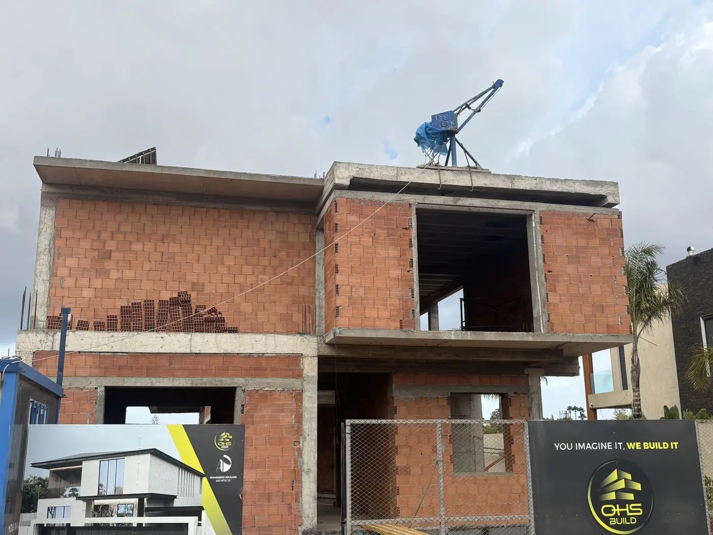

Six phases, un seul engagement.
Du premier doute au permis d'habiter, vous saurez toujours où vous en êtes, ce qui a été payé, et ce qui vient ensuite. Aucune zone grise.
Du premier doute au permis d'habiter, vous saurez toujours où vous en êtes, ce qui a été payé, et ce qui vient ensuite. Aucune zone grise.
Avant tout engagement contractuel, nous réalisons un audit complet de votre projet. Vous repartez avec un rapport relié de 20 pages, que vous décidiez de signer un mandat avec nous, ou non.
Si le rapport d'audit n'est pas livré dans les 7 jours ouvrés, les frais sont intégralement remboursés sans condition. Le rapport, s'il est livré, vous appartient, vous restez libre de l'utiliser avec un autre prestataire.
Avant tout engagement financier, nous vérifions chaque titre foncier à la Conservation Foncière. Plan d'Aménagement, servitudes, zones inondables, rien n'est assumé, tout est confirmé par écrit.
Nous coordonnons l'architecte CNOA partenaire et guidons le cahier des charges selon vos priorités. Les plans sont soumis à votre validation avant dépôt du permis de construire.
Sélection rigoureuse des entreprises classifiées, négociation des marchés, ouverture du compte séquestre notarial. Aucun décaissement possible sans votre signature électronique conforme à la Loi 43-20 sur les services de confiance (en vigueur depuis le 13 juillet 2023), qui encadre la signature électronique au Maroc en complément de la Loi 53-05.
Présence quotidienne sur chantier, mission OPC (ordonnancement, pilotage et coordination). Reportage photo et vidéo hebdomadaire signé. Visioconférence mensuelle adaptée à votre fuseau horaire. Chaque décaissement est conditionné à un procès-verbal d'avancement.
Inspection contradictoire pièce par pièce. Chaque réserve est documentée, chiffrée et engagée par l'entrepreneur avant paiement du solde. Le permis d'habiter est obtenu avant la remise des clés.
Dix ans de responsabilité décennale (art. 769 DOC), assurance RCD Loi 59-13 pour les ouvrages éligibles. Intervention sous 72 heures, suivi annuel de l'ouvrage.


La sérénité n'est pas un sentiment. C'est une architecture : six phases, des actes signés, aucune zone grise. Chez nous, le calme est un produit de la structure.

À chaque étape, vous savez.
C'est ça, le standard.
Le Directeur Général vous répond sous 48 heures ouvrées. Première consultation sans engagement.